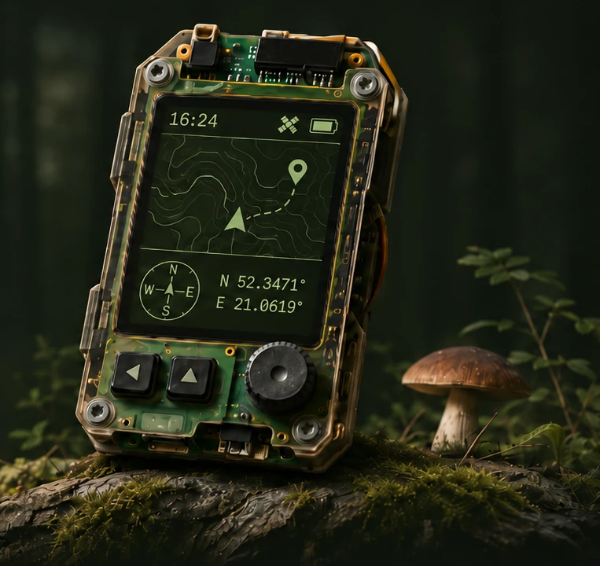

GRZYBOL // FIELD SYSTEM
GRZYBOL FIELD TERMINAL
Przenośne urządzenie GPS stworzone z myślą o nawigacji w lesie, zapisywaniu punktów orientacyjnych i wspieraniu wypraw grzybiarskich.

WIZUALIZACJA KONCEPCYJNAREV A // W TRAKCIE PROJEKTOWANIAOSTATNIA AKTUALIZACJA: 20.11.2026